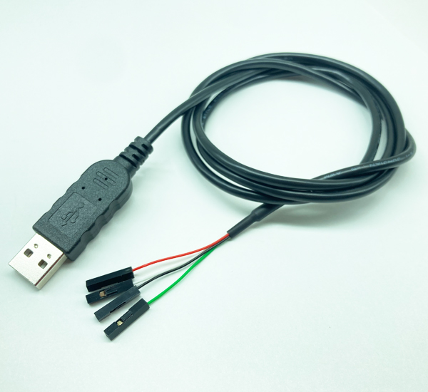

USB to UART cable Support +3.3V UART signals
Features and Specifications
| Data Rates: | 9600~115200 byte | USB Speed: | Full Speed 12M |
| USB Connector: | Type A | End Connect: | 4Pin SIL, 0.1" pitch |
| Cable Length: | 1M | Cable Detail: | 2725 28AWG/1Pairs+28AWG/2C OD:3.6 |
| I/O Voltage: | 5V or 3.3V | Max Power Output: | +5V /75mA, 3.3V / 50mA |
| Internal IC: | CH340 Serial | Operating Temperature: | -20 to +85 |
The TTL 232R 5V/3V3 is a USB to Serial (TTL level) converter cable which allows for a simple way to connect TTL interface units to USB. This version of CH340's USB to TTL serial adapter cables has it's I/O pins configured to operate at 5V or 3.3V levels.
The TTL 232R 5V/3V3 uses a CH340 IC which is housed inside the USB "A" connector, and is terminated at the end of a 1 meter cable with a 0.1" pitch header socket which provided access to transmit (Tx), receive (Rx), These lines all operate at 5V/3.3V levels. Also brought out on the header are Vcc (5V), and GND.
The TTL 232R 5V/3V3 is fully RoHS compliant and is supplied loose - packed in an anti-static bag. ZIP-lock packing.
Download:
© 2025, Hingtak Products Inc.